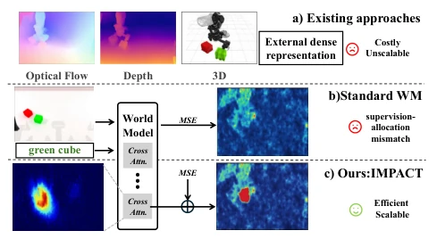
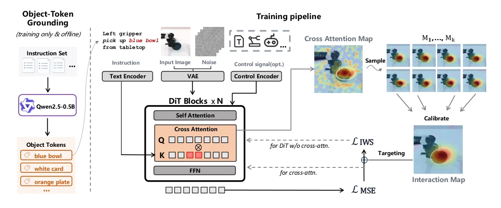
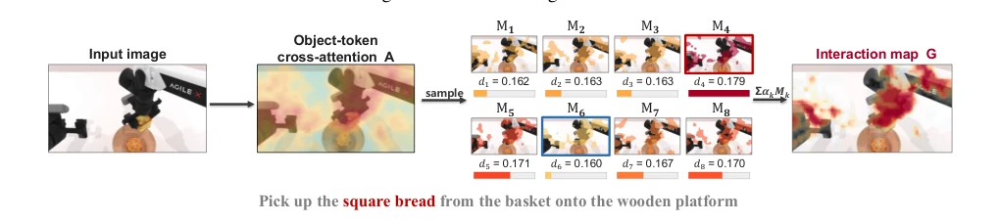
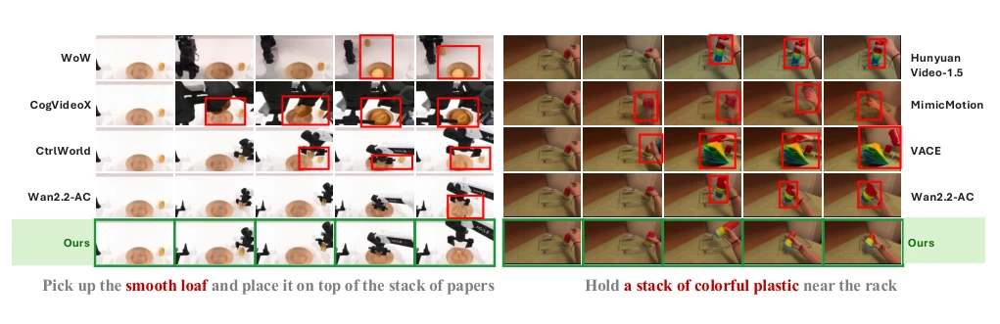
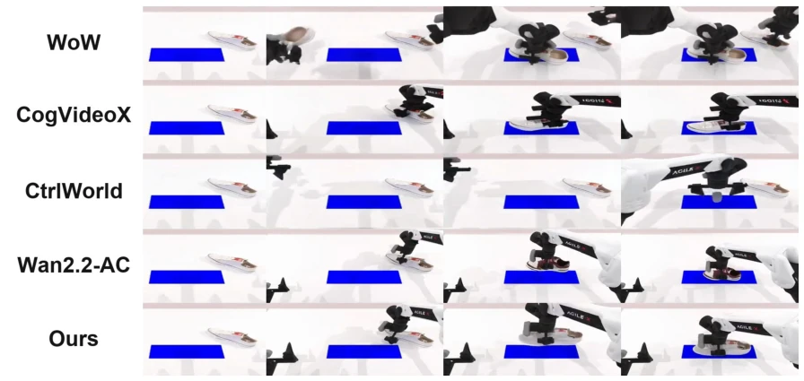
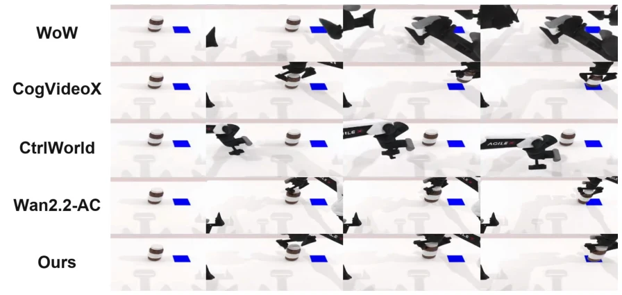
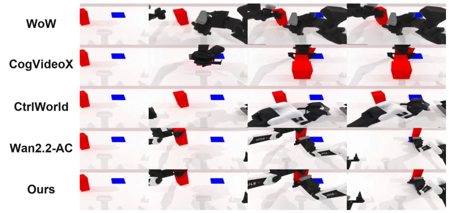
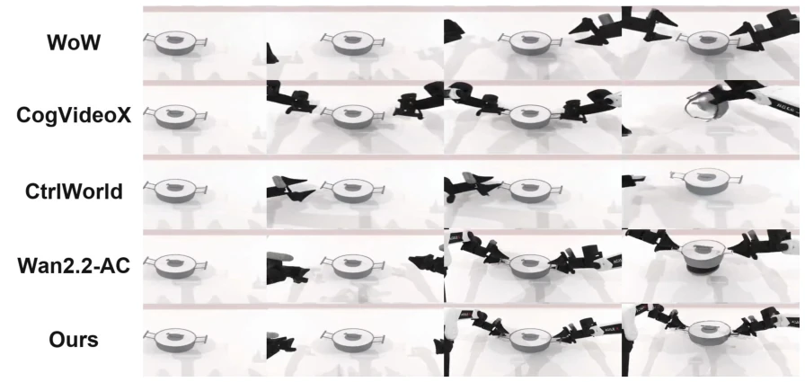
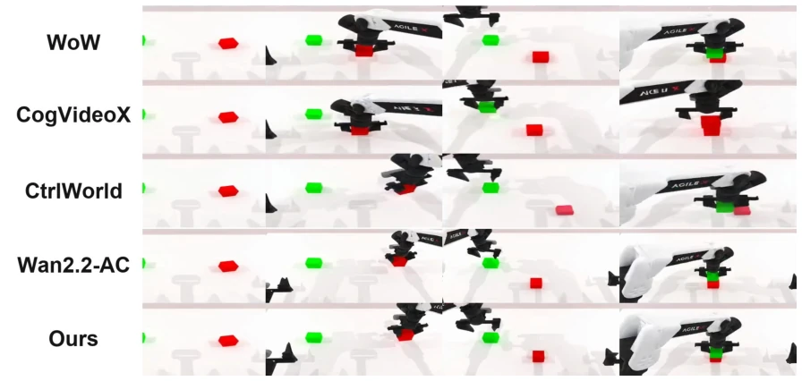
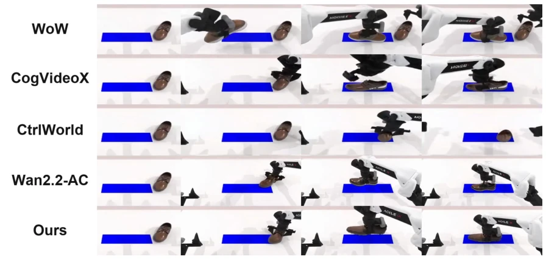

这篇论文标题起得挺响亮，“注意力即交互图”，听起来像是把 DiT 的黑盒内部机制直接当先验用。确实，作者敏锐地指出了标准 MSE 损失在具身世界模型中的“监督分配错配”问题——静态背景抢了梯度，交互区域被淹没。不用外部光流或深度估计就能提升物理一致性，这点很香，省了标注成本。但把注意力图当交互图，万一模型注意力本身不准怎么办？这招有点“以毒攻毒”的意思。实验在机械臂和人手上都有效，但没提推理开销是否增加（虽然说是训练时）。总的来说，是个聪明的 trick，但可能受限于 backbone 的注意力质量，属于“巧劲”而非“硬实力”的突破。
This paper's title is quite striking, "Attention is Interaction Graph", sounding like directly using the DiT's black-box internal mechanism as a prior. Indeed, the authors keenly pointed out the "supervision allocation mismatch" problem of standard MSE loss in embodied world models—static backgrounds steal the gradients, interaction regions are submerged. Improving physical consistency without external optical flow or depth estimation is very appealing, saving annotation costs. But if the attention map is treated as the interaction map, what if the model's attention itself is inaccurate? This move has a bit of the meaning of "using poison to cure poison". Experiments are effective on both robotic arms and human hands, but it doesn't mention whether inference overhead increases (although stated to be during training). Overall, it's a clever trick, but may be limited by the backbone's attention quality, belonging to "clever force" rather than "hard power" breakthrough.
研究动机Motivation
具身世界模型在动作条件预测上进步显著，但在物理交互合理性上仍差强人意，常出现物体形变、运动不连续等问题 (Zhang et al. 2026b)。现有方法多依赖外部稠密表示（如光流、深度、3D 重建）来约束生成过程 (Zhu et al. 2025; Zhang et al. 2026b)，但这需要辅助估计器或人工标注，成本高且扩展性差。更深层的问题是，标准视频生成训练采用全局平均 MSE 去噪目标 (Po et al. 2025)，导致静态内容主导优化信号，稀疏的动态交互区域得不到充分监督。模型可能降低全局损失却忽略了关键的接触与运动变化。因此，如何在不引入外部信号的前提下，让训练自动聚焦交互区域，是提升交互保真度的关键。
Embodied world models have made significant progress in action-conditioned prediction, but still fall short in physical interaction plausibility, often exhibiting issues like object deformation and discontinuous motion (Zhang et al. 2026b). Existing methods mostly rely on external dense representations (e.g., optical flow, depth, 3D reconstruction) to constrain the generation process (Zhu et al. 2025; Zhang et al. 2026b), but this requires auxiliary estimators or manual annotation, resulting in high costs and poor scalability. A deeper problem is that standard video generation training adopts a global average MSE denoising target (Po et al. 2025), causing static content to dominate the optimization signal, leaving sparse dynamic interaction regions insufficiently supervised. The model may reduce global loss while ignoring critical contact and motion changes. Therefore, how to enable training to automatically focus on interaction regions without introducing external signals is key to improving interaction fidelity.

Figure 1: Overview of IMPACT. (a) Existing approaches rely on costly and unscalable external dense representa- tions. (b) Standard world-model training with uniformly aver- aged MSE suffers from a supervision-allocation mismatch, under-supervising sparse interaction regions. (c) IMPACT calibrates object-conditioned cross-attention with prediction errors into an interaction map for efficient and scalable interaction-targeted training.
方法Method
IMPACT 框架包含三个核心阶段。首先是对象 Token 定位，利用冻结的 Qwen 模型从指令提取操作对象短语，无需视觉标注。接着是前向的注意力分布采样 (ADS)，将操作对象的交叉注意力聚合为空间先验，采样多个候选区域，并用解耦的局部预测误差校准权重，生成交互图。最后是反向的交互加权监督 (IWS)，利用交互图重加权去噪损失，增强交互区域监督。关键创新在于梯度路由：交叉注意力参数仅用全局 MSE 更新，防止先验坍塌，其余 DiT 参数用加权损失更新。整个过程无需外部表示，推理时也不需修改，仅训练时增加采样和加权计算。该方法巧妙利用 DiT 内部机制，将注意力图转化为交互监督信号，解决了传统 MSE 损失中静态背景主导梯度、交互区域被忽略的问题。通过解耦优化，既保证了交互区域的物理一致性，又维持了全局生成的稳定性，是一种无需额外标注的高效训练策略。
The IMPACT framework comprises three core stages. First is Object Token Localization, utilizing a frozen Qwen model to extract operation object phrases from instructions, requiring no visual annotation. Next is Forward Attention Distribution Sampling (ADS), aggregating cross-attention of operation objects into a spatial prior, sampling multiple candidate regions, and calibrating weights with decoupled local prediction error to generate an interaction map. Finally is Backward Interaction Weighted Supervision (IWS), utilizing the interaction map to reweight the denoising loss, enhancing interaction region supervision. The key innovation lies in gradient routing: cross-attention parameters are updated only with global MSE to prevent prior collapse, while other DiT parameters are updated with weighted loss. The entire process requires no external representations, no modifications during inference, only adding sampling and weighting calculations during training. This method cleverly utilizes DiT internal mechanisms, converting attention maps into interaction supervision signals, solving the problem where static backgrounds dominate gradients and interaction regions are ignored in traditional MSE loss. Through decoupled optimization, it ensures physical consistency of interaction regions while maintaining global generation stability, representing an efficient training strategy without additional annotation.

Figure 2: Framework of IMPACT. Object-token grounding (left): a frozen Qwen2.5-0.5B extracts the manipulated-object phrase from the instruction and aligns it to the corresponding object tokens. Training pipeline (right): within the DiT blocks, the cross-attention of these object tokens forms a proposal distribution (cross-attention map), from which M1, . . . , M8 candidate regions are sampled and calibrated by their detached local prediction errors into an interaction map. The map targets denoising supervision toward interaction regions, and gradient routing optimizes the cross-attention parameters with the global objective LMSE and the remaining DiT parameters with the interaction-weighted objective LIWS.

Figure 4: Visualization of ADS. On one robot-arm training forward pass, the light-to-dark color bar encodes increasing candidate errors and thus the relative contribution of each candidate to the aggregate.
Evaluated on two settings: WorldArena robotic arm manipulation and EgoDex human hand manipulation. Baselines include Wan 2.2, Cosmos-Predict 2.5, and various embodied models. Metrics cover EWMScore, FVD, FID, and interaction-specific metrics such as CLIP-Hand. Results show IMPACT improved EWMScore by 6.62 points on Cosmos and 3.81 points on Wan 2.2, significantly outperforming the MSE baseline. In hand tasks, FVD dropped from 366 to 110, with interaction metrics significantly improved. Ablation studies indicate ADS and IWS components are complementary; using IWS alone yields larger gains, while combining ADS further calibrates the prior. Qualitative results also show clearer contact regions and better physical consistency.

Figure 3: Qualitative comparison on both interaction settings. Left: robot-arm manipulation on WorldArena; right: first-person human-hand manipulation on EgoDex. For each setting we show generated frames for a representative instruction against various baselines. In both settings, IMPACT follows the instruction more faithfully and renders the interaction. Red boxes highlight artifacts and inconsistencies in the interaction regions of the baseline generations.
其他图片Other Figures

Figure 5: Printed-sneaker placement comparison. Rows show WoW, CogVideoX, CtrlWorld, Wan 2.2-AC, and IMPACT (Ours) under the same initial observation, instruction, and action trajectory; columns are uniformly sampled frames from each rollout.

Figure 6: Bottle placement comparison. Rows show WoW, CogVideoX, CtrlWorld, Wan 2.2-AC, and IMPACT (Ours) under the same initial observation, instruction, and action trajectory; columns are uniformly sampled frames from each rollout.

Figure 7: Block placement comparison. Rows show WoW, CogVideoX, CtrlWorld, Wan 2.2-AC, and IMPACT (Ours) under the same initial observation, instruction, and action trajectory; columns are uniformly sampled frames from each rollout.

Figure 8: Bimanual pot-lifting comparison. Rows show WoW, CogVideoX, CtrlWorld, Wan 2.2-AC, and IMPACT (Ours) under the same initial observation, instruction, and action trajectory; columns are uniformly sampled frames from each rollout.

Figure 9: Block-stacking comparison. Rows show WoW, CogVideoX, CtrlWorld, Wan 2.2-AC, and IMPACT (Ours) under the same initial observation, instruction, and action trajectory; columns are uniformly sampled frames from each rollout.

Figure 10: Shoe placement comparison. Rows show WoW, CogVideoX, CtrlWorld, Wan 2.2-AC, and IMPACT (Ours) under the same initial observation, instruction, and action trajectory; columns are uniformly sampled frames from each rollout.